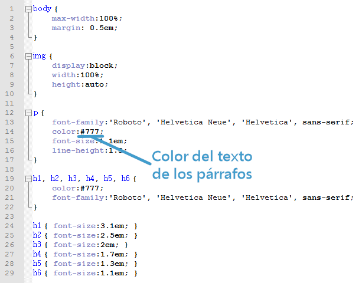
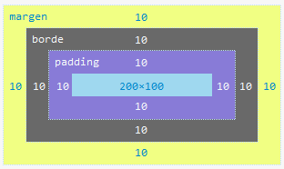

Propiedades generales
Las propiedades generales son:
-
font-family: desplaza una serie de fuentes de letra para cambiar en los textos.
-
font-size: da la opción de cmabiar el tamaño del texto.
-
color: desplaza distintos colores de css para darle vida a la página.
-
width: define el ancho de algún elemento en pixeles, ems o porcentaje.
-
height: Define del alto de algun elemento en pixeles, ems o porcentaje.
-
padding: reconoce una distancia desde el borde de un elemento a su contenido.
-
margin: distancia entre un elemento y otro.
-
border: define el borde de algún elemento, color, estilo y prosor.
-
background: le da un fondo a elemtos, el fondp puede ser un color o imagen.

Propiedades para texto
Las propiedades son:
-
text-indent: desplazamiento de la primera línea del texto.
-
text-align: alinea el texto.
-
text-decoration: da efectos de subrayado y tachado.
-
letter-spacing: brinda un espacio entre caracteres.
-
word-spacing: da un espacio entre palabras.
-
text-transform: da una transformación a mayúsculas/minúsculas.
-
line-height: tamaño entre el esoacio de las líneas.
-
vertical-align: da una alineación vertical.

Propiedades para cajas.
Son:
-
margin: es un margene xterior y separa la caja del eelemento de las demás,
-
padding: es un margen interno o relleno, se aplique el borde hacia dentro.
-
border: aplica el largo y ancho junto con un estilo.
-
overflow: especifica que hacer cuando el contenido no cabe en la caja.
Susposibles valores son visible, hidden, scroll y auto.
-
block: los bloques ocupan el ancho de la pantalla y comienza en una nueva línea.
-
inline: ocupa el espacio del contenido, sus dimenciones no se especifican en CSS.

Conección de html a CSS
Primero se debe de crear un archivo CSS y dentro del archivo un documento CSS en nuestro servidor, luego vamos a crear un enlace en html. En este se inica con link seguido por un auxiliar rel en el que se debe de colocar stylesheet al cual le segue un href en donde se coloca la dirección de la carpeta CSS y se cierra con los signos mayor y menor.